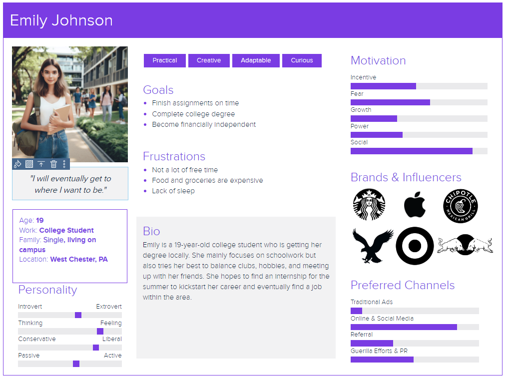
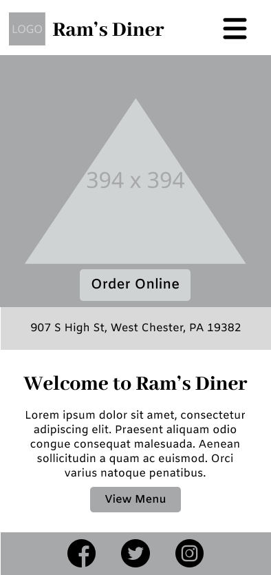
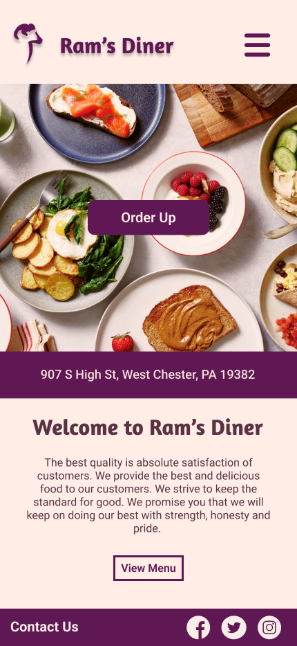
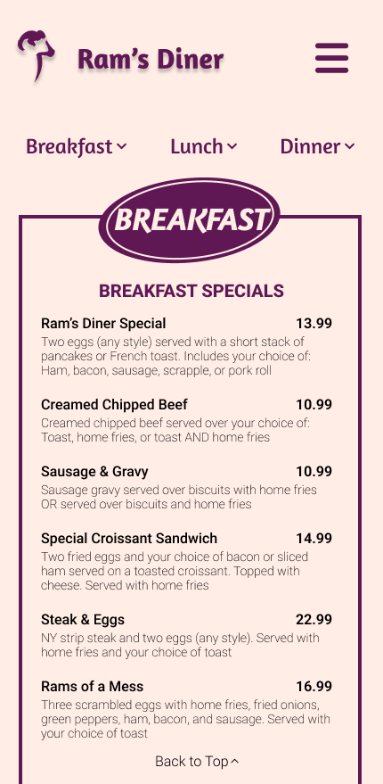
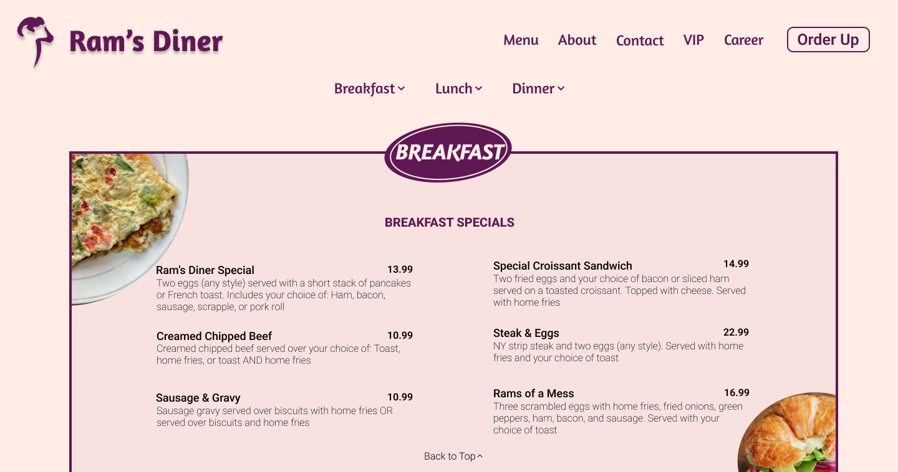

Diner Re-design
Initial Research
This project aimed to enhance the user’s experience by revamping Ram’s Diner’s website, more specifically its homepage and menu. To begin, I analyzed its current website and found that there were elements that hindered the user from fully navigating the interface smoothly. I also created a user persona that mimics the target audience to fully understand the user and their needs.
Elements such as the two menu options, the unclear organization of the homepage, and the format of the menu created an unclear aesthetic the diner is trying to create while also making navigation difficult.
Ideation Stage
The design underwent several iterations playing with its color palette and layout. These wireframes served as a discerning tool to establish the optimal composition of the homepage, distinguishing essential elements from unnecessary ones.
Final Product
The final result was a revamped website that provides an enhanced user experience and a modern, cohesive representation of the diner's brand. Noteworthy improvements include the consolidation of the menu, fostering seamless navigation and mitigating user confusion.
The reimagined menu page is particularly impactful, featuring a structured text format with noticeable subheadings and strategically integrated navigation elements. This refinement not only elevates the user experience but also establishes a better navigation flow.
  